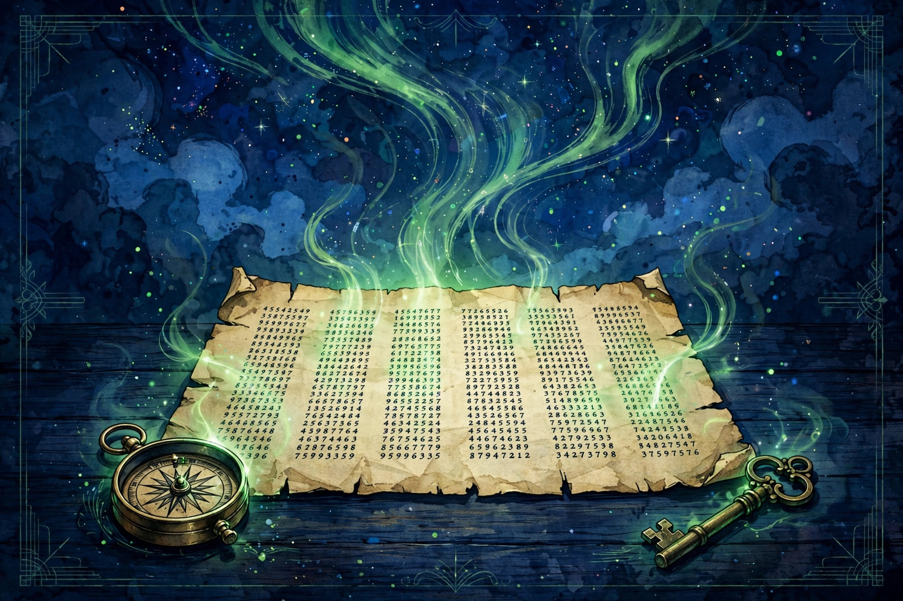

October 10, 2026
The Beale Ciphers: Two Centuries, Three Number Strings, Zero Answers

Illustration by The Discovery Wire (generated artwork for this story)
The Beale Ciphers: Two Centuries, Three Number Strings, Zero Answers
A pamphlet, a box, and a fortune
In 1885, a slim pamphlet titled The Beale Papers hit the streets of Lynchburg, Virginia, and printed something extraordinary: three long strings of numbers, presented as encrypted messages describing a buried treasure.
The story the pamphlet told goes like this. Around 1820, a man named Thomas J. Beale and a party of adventurers mined a rich lode of gold and silver somewhere north of Santa Fe, then in Spanish territory. Beale carried the metals back to Virginia and buried them in a secret vault in Bedford County. Before vanishing, he locked three coded texts — plus letters — in an iron box and entrusted it to a Lynchburg innkeeper named Robert Morriss, with instructions to open the box only if he failed to return within ten years.
Beale never returned. Morriss opened the box in 1845, found the three ciphertexts, and spent years trying to decode them without success. Decades later he passed them to a friend, who finally cracked cipher number two using a modified edition of the United States Declaration of Independence as the key — a book cipher where each number points to a word, and the first letter of that word becomes the plaintext letter. Number 71 meant the 71st word ("instituted"), yielding the letter "I."
What the cracked cipher says
The deciphered second paper describes a treasure in remarkable detail:
- First deposit (November 1819): 1,014 pounds of gold and 3,812 pounds of silver
- Second deposit (December 1821): 1,907 pounds of gold and 1,288 pounds of silver, plus jewels obtained in St. Louis valued at $13,000
The pamphlet says the hoard — roughly three tons of precious metal — was packed in iron pots and buried about four miles from Buford's tavern in Bedford County, roughly six feet below the surface, in a stone-lined vault. Modern estimates of the treasure's value run into the tens of millions of dollars.
But cipher number two is also the only one that names what it is. Cipher number one — the exact location — and cipher number three — the names of the treasure's owners — have resisted every attempt at a solution for two centuries: government cryptographers, supercomputers of the late 1960s (researcher Carl Hammer found the number strings weren't random, but couldn't read them), and generations of amateurs trying other book keys — the Magna Carta, the Bible, the U.S. Constitution.
Is any of it real?
This is where the story gets its sharpest edge. A decoded message proves only that someone wrote a message — it proves nothing about a treasure.
The skeptic's case is substantial:
- No corroborating records. The public trail begins with the 1885 pamphlet, more than sixty years after the events it describes.
- Stylometric evidence. A 1982 scholarly analysis by Joe Nickell found the writing style of Beale's letters matched the pamphlet's own author — suggesting Thomas J. Beale never existed and the publisher, James B. Ward, wrote the whole thing. Nickell also found anachronistic language ("stampeding") that wouldn't fit the 1820s.
- Statistical red flags. Cryptographer Jim Gillogly's 1980 "Dissenting Opinion" and a 2020 analysis by Viktor Wase found the unsolved ciphers' number patterns suggest they were manufactured by a human in base 10 — the statistical fingerprint of invented randomness rather than a genuine encoded message.
- The Edgar Allan Poe theory — debunked. Researcher Robert Ward suggested Poe (an avid cryptography enthusiast living in Virginia) wrote the pamphlet, but Poe died in 1849, well before the 1885 publication, and the pamphlet references the Civil War, which began in 1861.
- The NSA's declassified Beale collection preserves later cryptologic studies — but it does not authenticate the treasure story.
The digs that never found anything
Despite all of this, the hunt never stopped. Treasure hunters have dug across Bedford County for more than a century — some have been arrested for trespassing, others spent fortunes on permitted digs at Porter's Mountain that turned up only Civil War artifacts. The Beale Cipher Association published a newsletter from 1979 to 1996. The mystery has been featured on Unsolved Mysteries, History Channel's Brad Meltzer's Decoded, Expedition Unknown, and even got a name-check in the film The Imitation Game.
Nobody has found anything. Nobody has cracked cipher one or three.
Why we love it anyway
The Beale ciphers are the perfect unsolved mystery: a verifiable artifact (the pamphlet, the number strings, the one confirmed decode) wrapped around an unverifiable story (the treasure, the man, the vault). It asks the reader to do cryptography's most seductive job — to hold both possibilities at once: either the greatest treasure cipher in American history, or the greatest treasure hoax.
Every few years, someone digs a new hole in Bedford County. We'll be here if they find anything.
Sources: Wikipedia ("Beale ciphers"), ExplorersWeb ("Exploration Mysteries: Beale Ciphers"). No solutions claimed here — only history, curiosity, and open questions. For a careful modern walkthrough of the evidence, see the Beale ciphers explainer at knowledge.tiannahowardadventures.com.
Source: Wikipedia / ExplorersWeb — read the original report
← Back to latest stories